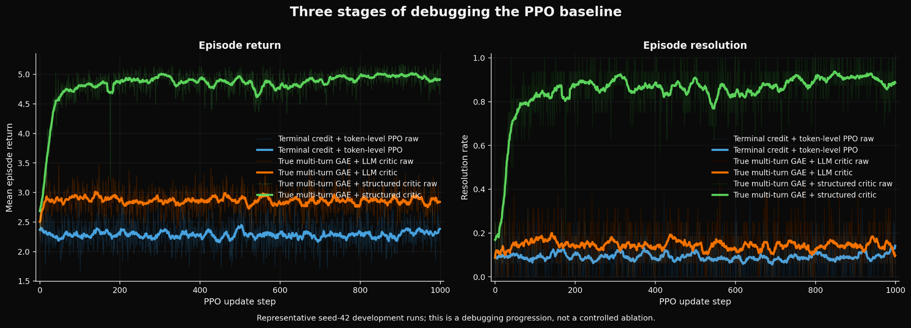
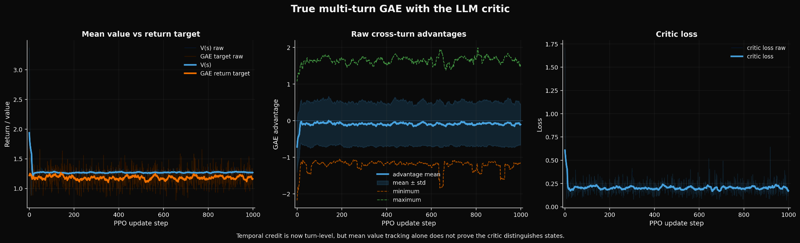
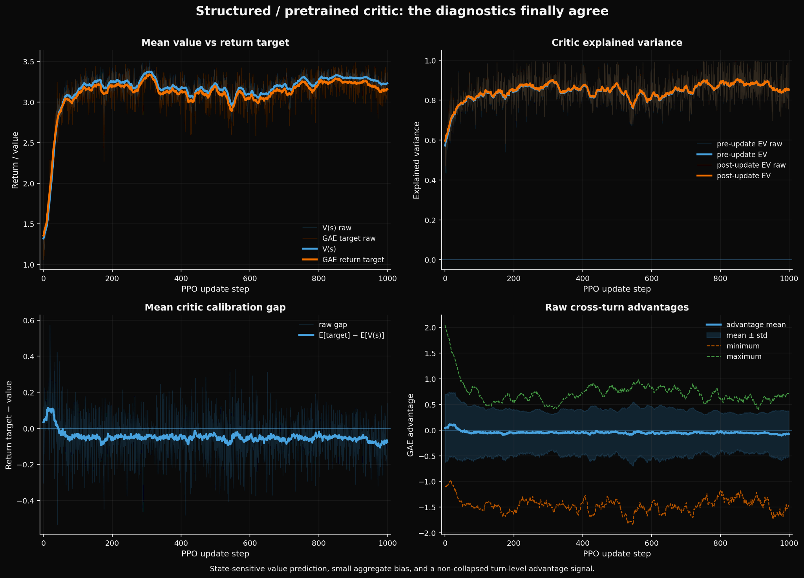

I recently spent much more time than I expected trying to get a PPO baseline to actually learn in a multi-turn language-agent environment.
At first this looked like a normal implementation task. I already had the environment, the reward function, live multi-turn rollouts, and a policy model. PPO is well studied and the basic language-model machinery already exists in libraries such as Transformers Reinforcement Learning (TRL). The plan was simple: connect the pieces, train the baseline, and move on.
Instead, the baseline kept failing.
That ended up being more useful than I expected. There is a big difference between running a baseline that fails and putting the number in a table, versus understanding why it fails well enough to make it work. The second one forces you to understand what the learning algorithm is actually seeing.
The main lesson for me was this: before tuning PPO, make sure the critic understands what a good state means in your environment.
01My first instinct was to tune PPO
When an RL run is flat, there are many easy things to blame. Maybe the learning rate is wrong. Maybe I need more PPO epochs. Maybe the clipping range is too conservative. Maybe the rollout batch is too small.
I tried some of those things. They were mostly a distraction.
This is not because PPO hyperparameters do not matter. They obviously do. But hyperparameters control how efficiently the optimizer learns from the signal it has. They cannot repair a signal that does not distinguish the actions you care about.
My earliest version logged value loss. Later I learned that value loss by itself was nowhere near enough.
02The original credit assignment did not match the decision structure
The environment is multi-turn information seeking. At each turn, the policy asks a question. The answer changes the remaining candidate set. The next question is then asked from this new state.
In the pre-multiturn implementation, I collapsed the episode reward into a terminal environment signal, while the standard language-model PPO code still computed its temporal GAE structure across the generated tokens of each response.
The LLM still has to be optimized through token probabilities. That part does not go away. But the credit signal should first be computed at the level where the environment decisions are made.
Here, that level is the turn.
A question at turn 2 may eliminate half of the hypothesis space. A question at turn 7 may be completely redundant. Those are different decisions even if both happen inside the same eventual episode.
03So I changed it to actual multi-turn GAE
The next version computed one critic value per environment state, V(s_t), and ran GAE backward across environment turns instead of across tokens.
Only after computing one advantage A_t for the turn did I broadcast that advantage to the generated tokens belonging to that language-model action.
credit is computed at the turn level; the policy is still updated through the token log-probabilities that produced that turn.
This was a much more faithful multi-turn PPO implementation.
And it helped. But it still did not really solve the problem.

04Fixing temporal credit assignment was not enough
Figure 1 is the high-level story. The terminal-credit version stays around a low return and low resolution. Moving to actual turn-level GAE gives a clear improvement, but after 1,000 PPO updates the policy is still weak.
This was important because it ruled out the easiest explanation. The failure was not just that I had implemented the wrong temporal axis for GAE.
True multi-turn credit assignment was necessary. It was not sufficient.
At that point I stopped treating the critic as an implementation detail and started treating it as its own learning problem.
05The value function looked more reasonable than it actually was
My initial critic used the same general LLM family as the policy. That felt like the natural choice. The policy operates over language, the state contains language, and standard language-model PPO implementations commonly reuse the policy representation for value prediction.
What I had implicitly assumed was:
But the actor and critic are answering different questions.
The actor asks: what should I do next?
The critic asks: given where I am now, how much future reward is still available?
Those are not the same prediction problem.

06A critic can predict the mean return and still be useless
Figure 2 is probably the most useful failure in the whole exercise.
The critic does not look obviously broken. Its mean prediction stays close to the mean GAE target. The value loss drops quickly and remains stable. The raw cross-turn advantages have non-zero variance.
If I only looked at those diagnostics, it would be easy to say: the critic looks fine.
But consider a stupid value function:
If the average future return is also around 1.25, that critic can have a respectable average error while understanding almost nothing about the actual states.
What I really need from the critic is something closer to:
07This is where explained variance became the useful diagnostic
The metric that finally made this distinction concrete for me was explained variance:
Matching the mean return is about aggregate calibration. Explained variance asks a stronger question: does the critic explain why different states have different future returns?
This distinction is easy to miss:
My older runs did not even log explained variance. That itself became part of the lesson. I had logged a value loss without logging enough information to know whether the critic had learned useful state structure.
08The correct value representation depends on the environment, not the policy modality
This was the conceptual turning point.
The policy is a language model, but the value of an intermediate state in this environment has a very strong structured component.
Imagine two states:
Even without understanding much language, these states clearly have very different prospective futures.
The useful value signal depends strongly on quantities such as turn index, turns remaining, the number of candidates left, recent candidate contraction, and recent reward.
In retrospect, asking a general language representation to rediscover all of that geometry implicitly was making the critic's job harder than necessary.
09Before training PPO, I started asking whether the value problem was learnable at all
Instead of repeatedly running the full actor-critic loop, I separated the critic problem:
Given an intermediate state and the future return that actually followed it, can a model predict that return at all?
This turns one difficult coupled RL problem into a much simpler supervised prediction problem:
The offline experiments showed that the environment did contain predictable prospective value. Simple structured state information was already informative.
That gave me much more confidence that the problem was not “PPO cannot work here.” The problem was that the critic I had chosen was not making good use of the state structure.
10Pretraining the critic also fixed an ugly bootstrap problem
Actor-critic learning has a chicken-and-egg problem at the beginning.
The critic is initially poor, but PPO immediately uses it to construct the advantages that train the actor:
But I already had trajectories. That meant I could train the value model on observed future returns before starting online PPO.
The critic no longer had to discover the basic geometry of the environment at the same time that the policy was changing underneath it.
Online value learning became adaptation instead of learning the entire notion of state value from scratch.

11The useful part was not one pretty curve. It was that the diagnostics finally agreed.
The final structured/pretrained critic run gave me a combination of signals that I trust much more than a single falling value loss.
First, the critic and the GAE return target track each other closely.
Second, explained variance stays high, roughly in the 0.8–0.9 regime for much of training. That suggests the critic is not merely learning the global mean. It is explaining a large part of the state-to-state variation in future return.
Third, the mean calibration gap stays small. The critic is only slightly biased in aggregate.
Finally, the raw turn-level advantage distribution does not collapse. Individual turns can still do substantially better or worse than the critic expected.
At the same time, the actual task metrics improve strongly.
This is the point where I finally felt that the different pieces of PPO were telling the same story.
12A small theoretical thing I did not expect
One side effect of this experiment is that it changed how I think about “epistemic state” in this environment.
My intuition had been that epistemic adaptivity should mostly depend on what the agent currently knows: its remaining hypothesis space and how observations have changed its beliefs.
But the working critic also benefits from variables such as turn index and turns remaining. Those are not epistemic facts in the narrow sense.
The same belief state can have a different value depending on the interaction budget that remains.
So one possible refinement is that the quality of an epistemic state and the value of that state are not the same object. Value also depends on the future opportunity to act on what is known.
I am not fully settled on the right formulation yet, but I think this is an interesting consequence of actually trying to build the baseline rather than only reasoning about it abstractly.
›What I learned
I started this exercise thinking that getting a PPO baseline to work was mostly an implementation problem.
The useful part turned out to be understanding the signals flowing through the implementation.
My current checklist is much simpler:
The run became convincing to me only when the external task metrics and the internal critic/GAE diagnostics started agreeing with one another.
Reward tells me how the trajectory went.
Value tells me how promising the current position is.
Advantage tells me whether this particular decision made that future better or worse than expected.
That is probably the simplest thing I took away from spending a weekend trying to make a “baseline” actually work.